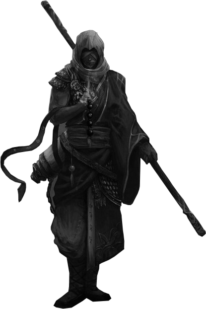

 Mudum es un monje nacido en el pueblo de Charchi. Creció viviendo de la ilegalidad en la parte más turbia de la ciudad a escondidas de su madre que pretendía un futuro noble para él. Cuando su madre fue asesinada a manos de su padre, en lugar de buscar venganza decidió finalmente dar un giro a su vida y encontró la paz en un templo lejano.
Su vida tomó un rumbo extraño al emprender una nueva aventura con nuevos compañeros. Hoy Mudum murió físicamente más de una vez pero vive a través del poder de su alma y de su difunto maestro.